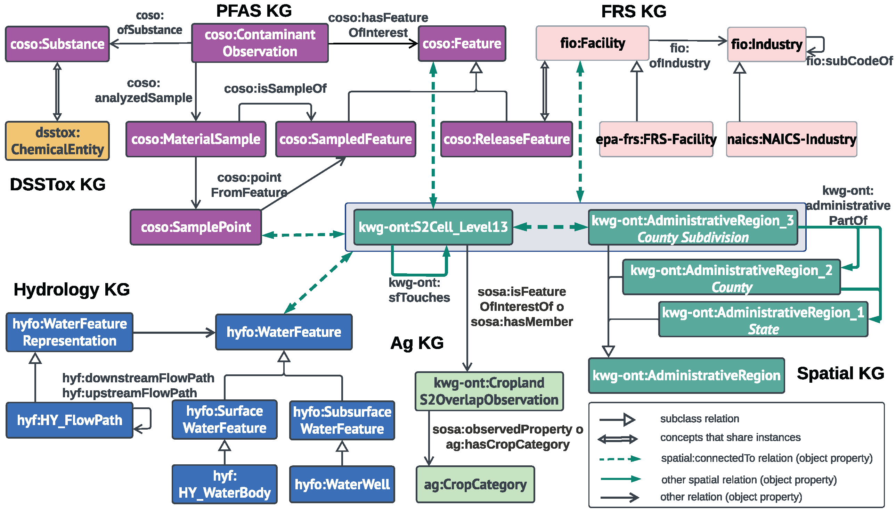

Data & Methods
SAWGraph integrates data from federal, state, and other sources using a modular network of interconnected knowledge graphs, domain ontologies, and geospatial relationships. This approach allows information from different sources and domains to be aligned and queried together while preserving its meaning and provenance.
The integrated structure supports analysis across PFAS observations, facilities and industries, hydrology, geography, agriculture, and chemical information rather than requiring users to assemble and reconcile these datasets separately.
Knowledge Graph Architecture
SAWGraph uses a modular architecture of six interconnected knowledge graph components to integrate information about PFAS contamination, potential sources, hydrologic pathways, spatial relationships, chemical substances, agricultural context, and potential impacts. This structure supports reuse, modular development, and cross-dataset geospatial analysis.
Together, the components connect PFAS observations with information about chemical substances, facilities and industries, surface and subsurface hydrology, S2 cells and administrative regions, and agricultural features and land use. The architecture diagrams below show how concepts and relationships span the PFAS, FRS, Hydrology, Spatial, Agriculture, and DSSTox components.
Four SAWGraph knowledge graphs are currently registered with the Open Knowledge Network : the SAWGraph PFAS KG, SAWGraph FRS KG, SAWGraph Hydrology KG, and SAWGraph Spatial KG. The Agriculture KG is locally deployed and under development. DSSTox chemical information is currently incorporated within the PFAS KG, with a separate DSSTox graph component planned.

About Knowledge Graphs
Knowledge graphs organize information as entities and relationships, allowing data from different sources and domains to be connected and queried together. SAWGraph uses interconnected knowledge graphs so that environmental observations can be examined together with information about facilities, hydrology, geography, agriculture, and chemical substances.
Ontologies
Ontologies provide shared concepts, definitions, and relationships that help SAWGraph align information across datasets while preserving its meaning and provenance. They provide the semantic structure used to represent entities and relationships within and across the interconnected knowledge graph components.
Data Sources
SAWGraph integrates data from multiple federal, state, and other sources. The primary data sources currently include:
| Repository | Name | Type | Description | Source | Source URL | Geospatial Metadata URL (to comply with Geospatial Act of 2018) |
|---|---|---|---|---|---|---|
| Sawgraph-KG | Water Quality Samples (WQP) | Samples | Surface and groundwater locations (WQP sites), PFAS test results | USGS, states and tribes, EPA | Water Quality Portal | Water Quality Portal User Guide |
| Sawgraph-KG | Maine EGAD | Samples | PFAS samples from Maine Environmental and Geographic Analysis Database (EGAD) | Maine DEP | Maine EGAD Samples | Maine EGAD Metadata |
| FIO | Facility Registry Service / Envirofacts | Facilities | Facilities and program records about facilities, including locations, identifiers, and NAICS classifications, from state and EPA program information systems | EPA | EPA Envirofacts | |
| FIO | NAICS (North American Industry Classification System) | Industries | Industry classification system used to categorize businesses and facilities | U.S. Census Bureau | NAICS | |
| FIO | PFAS Industries | Industry Collection | Industries to research for PFAS use compiled by an Environmental Council of the States workgroup | ECOS | ECOS PFAS Industry Data | |
| FIO | PFAS Industries | Industry Collection | PFAS Handling Industry Sectors list compiled by EPA | EPA PFAS Analytic Tools | EPA PFAS Analytic Tools Data Sources | |
| Hydrology | Flowlines (NHDPlus v2) | Surface Water Flowlines | Surface water flowlines with downstream connectivity for network tracing | USGS | NHDPlus V2 | NHDPlus V2 User Guide |
| Hydrology | Waterbodies (NHDPlus v2) | Surface Water Bodies | Surface water bodies, named and unnamed, including ponds, lakes, and some marshes and wetlands | USGS | NHDPlus V2 | NHDPlus V2 User Guide |
| Hydrology | Wells | Water Wells | Primarily private drinking water wells |
Individual states
Moving toward a single source such as USGWD or NWWDB |
ISGS ILWATER
MGS Maine Well Database MGS Maine Well Database Unlocated MGS Maine Well Database Geoserver |
ISGS ILWATER Map
MGS Maine Well Database Metadata MGS Maine Well Database Unlocated Metadata Maine DACF Water Well Database Metadata |
| Hydrology | Aquifers | Aquifers | Aquifers at various scales, from large national aquifer systems to more local aquifers, and from deep bedrock to shallow sand and gravel | Individual states |
IL ISGS Aquifers
Maine DACF Aquifers |
|
| Hydrology | Safe Drinking Water Information System | Public Water Systems | Basic information about each public water system, including violation and enforcement information | EPA | SDWIS | SDWIS Metadata |
| Spatial | Administrative Regions |
States (level 1)
Counties (level 2) County subdivisions (level 3) |
Political units, boundaries, FIPS codes, and hierarchy |
KnowWhereGraph (Levels 1 & 2)
Census Bureau (Level 3) |
KnowWhereGraph
Census Bureau TIGER/Line Files |
Each Census Bureau shapefile includes a *.iso.xml metadata file |
| Spatial | S2 Cells | Level 13 S2 Cells | Level 13 S2 cells used for spatial integration | KnowWhereGraph | KnowWhereGraph |